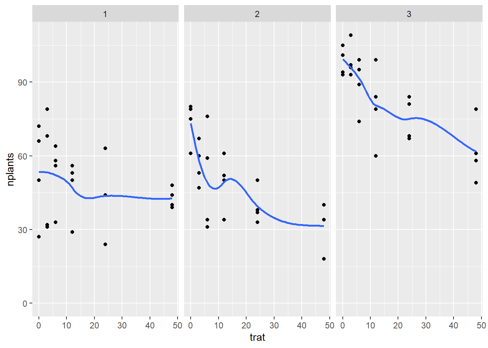
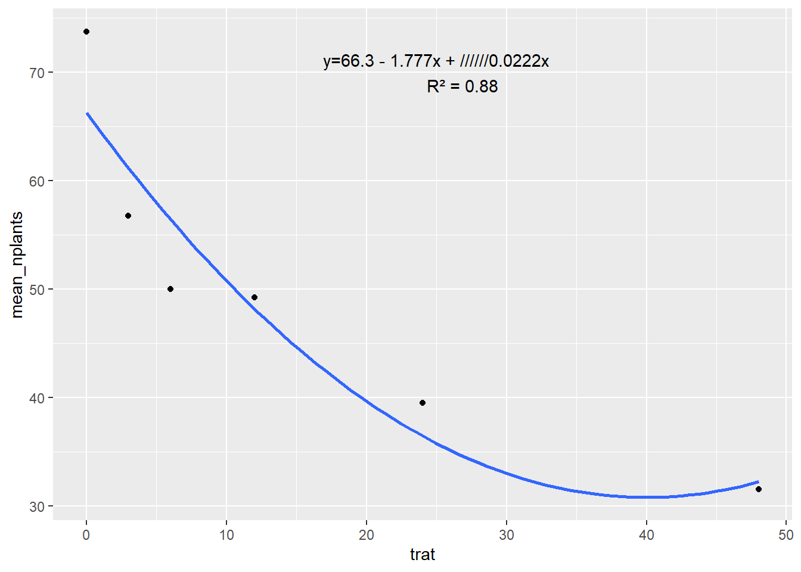
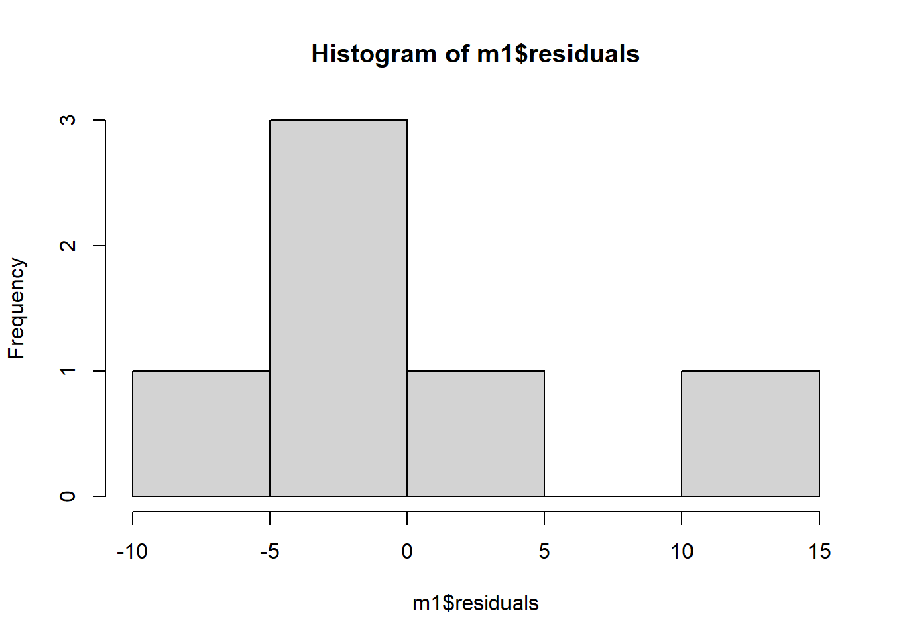
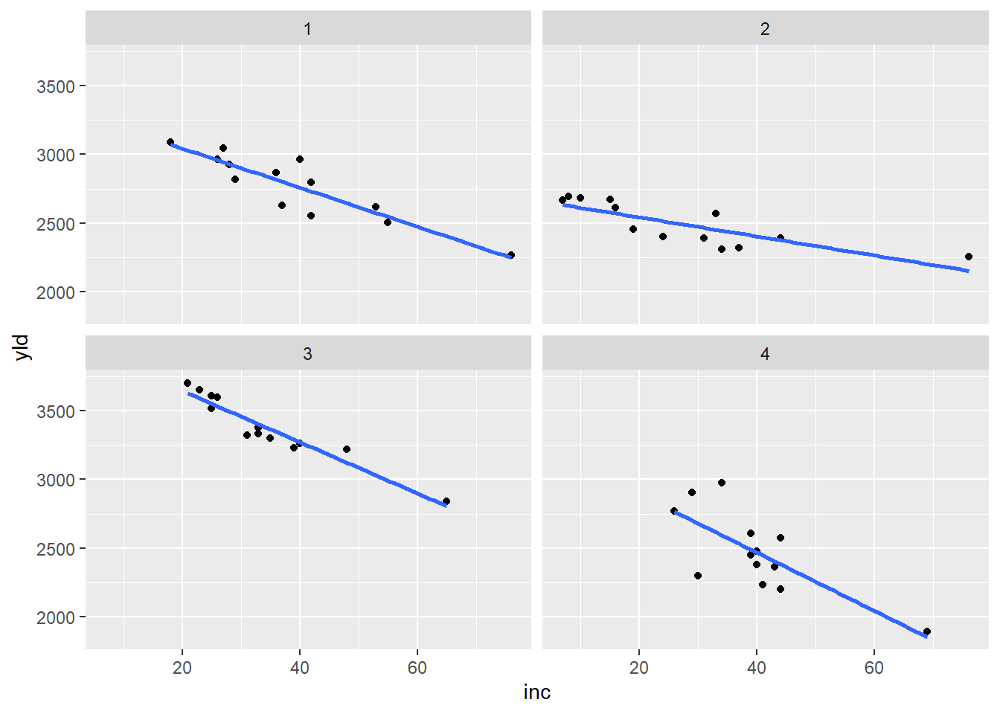
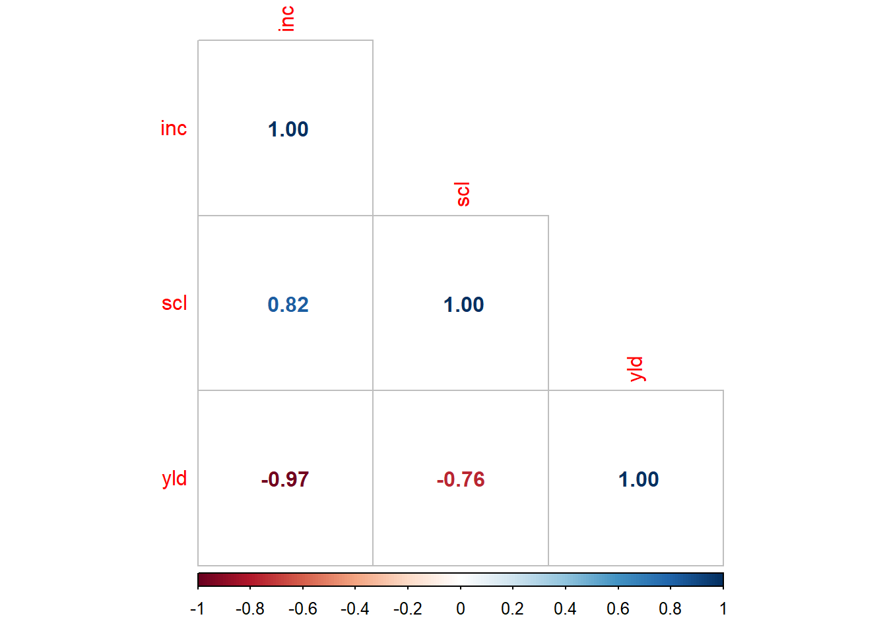

Codigo
library(readxl)
library(tidyverse)
estande <- read_excel("dados-diversos.xlsx", "estande")
estande |> ggplot (aes(trat,nplants))+
geom_point()+
facet_wrap(~exp)+
ylim(0,max(estande$nplants))+
geom_smooth(se=F)
Regresión lineal
La regresión lineal es una técnica de análisis de datos que predice el valor de datos desconocidos utilizando otro valor de datos relacionado y conocido. Modela matemáticamente la variable desconocida o dependiente y la variable conocida o independiente como una ecuación lineal.

“group_by”: seleciona las variables de interes
estande2 <- estande |>
filter(exp ==2) |>
group_by(trat) |>
summarise(mean_nplants =
mean(nplants))
estande2 |> ggplot(aes(trat, mean_nplants))+
geom_point()+
#geom_line()+
geom_smooth(se = F,formula = y ~ poly(x,2), method = "lm")+
annotate (geom ="text",
x=25, y=70,
label= "y=66.3 - 1.777x + //////0.0222x
R² = 0.88")
#R² - coeficiente de determinação (regressão linear)
Akaike Information Criterion (AIC)
Permite comprobar hasta qué punto el modelo se ajusta al conjunto de datos sin sobreajustarlo. La puntuación AIC recompensa a los modelos que alcanzan una alta calidad de ajuste y los penaliza si se vuelven demasiado complejos. Por sí sola, la puntuación AIC no es muy útil a menos que se compare con la puntuación AIC de un modelo competidor. Se espera que el modelo con la puntuación AIC más baja logre un mejor equilibrio entre su capacidad para ajustarse al conjunto de datos y su capacidad para evitar un ajuste excesivo al conjunto de datos.
Call:
lm(formula = mean_nplants ~ trat, data = estande2)
Residuals:
1 2 3 4 5 6
12.764 -2.134 -6.782 -3.327 -4.669 4.147
Coefficients:
Estimate Std. Error t value Pr(>|t|)
(Intercept) 60.9857 4.5505 13.402 0.000179 ***
trat -0.7007 0.2012 -3.483 0.025294 *
---
Signif. codes: 0 '***' 0.001 '**' 0.01 '*' 0.05 '.' 0.1 ' ' 1
Residual standard error: 8.117 on 4 degrees of freedom
Multiple R-squared: 0.752, Adjusted R-squared: 0.69
F-statistic: 12.13 on 1 and 4 DF, p-value: 0.02529
Call:
lm(formula = mean_nplants ~ trat + trat2, data = estande2)
Residuals:
1 2 3 4 5 6
7.4484 -4.4200 -6.4386 1.0739 3.0474 -0.7111
Coefficients:
Estimate Std. Error t value Pr(>|t|)
(Intercept) 66.30156 4.70800 14.083 0.000776 ***
trat -1.77720 0.62263 -2.854 0.064878 .
trat2 0.02223 0.01242 1.790 0.171344
---
Signif. codes: 0 '***' 0.001 '**' 0.01 '*' 0.05 '.' 0.1 ' ' 1
Residual standard error: 6.517 on 3 degrees of freedom
Multiple R-squared: 0.8801, Adjusted R-squared: 0.8001
F-statistic: 11.01 on 2 and 3 DF, p-value: 0.04152 df AIC
m1 3 45.72200
m2 4 43.36151##Dos variables resposta
Relación con dos variables de respuesta - prueba de asociación; Análisis de correlación - coeficiente de correlación (coeficiente de Pearson);R siempre es mayor que R².
##Coeficiente de Pearson
El coeficiente de correlación de Pearson es una prueba que mide la relación estadística entre dos variables continuas. Si la asociación entre los elementos no es lineal, el coeficiente no se representará correctamente.

# A tibble: 13 × 5
study treat inc scl yld
<dbl> <dbl> <dbl> <dbl> <dbl>
1 3 1 65 5013 2839
2 3 2 33 3619 3375
3 3 3 40 2325 3264
4 3 4 35 2588 3301
5 3 5 48 3969 3220
6 3 6 31 1556 3321
7 3 7 39 3175 3229
8 3 8 25 1763 3517
9 3 9 26 2894 3595
10 3 10 21 350 3702
11 3 11 23 419 3652
12 3 12 25 644 3608
13 3 13 33 2850 3334
Shapiro-Wilk normality test
data: mofo1$yld
W = 0.92193, p-value = 0.2663
Pearson's product-moment correlation
data: mofo1$inc and mofo1$yld
t = -10.9, df = 11, p-value = 3.105e-07
alternative hypothesis: true correlation is not equal to 0
95 percent confidence interval:
-0.9872663 -0.8579544
sample estimates:
cor
-0.956692 
---
title: "Analisis de correlación"
format: html
editor: visual
---
Regresión lineal
La regresión lineal es una técnica de análisis de datos que predice el valor de datos desconocidos utilizando otro valor de datos relacionado y conocido. Modela matemáticamente la variable desconocida o dependiente y la variable conocida o independiente como una ecuación lineal.
```{r}
library(readxl)
library(tidyverse)
estande <- read_excel("dados-diversos.xlsx", "estande")
estande |> ggplot (aes(trat,nplants))+
geom_point()+
facet_wrap(~exp)+
ylim(0,max(estande$nplants))+
geom_smooth(se=F)
```
"group_by": seleciona las variables de interes
```{r}
estande2 <- estande |>
filter(exp ==2) |>
group_by(trat) |>
summarise(mean_nplants =
mean(nplants))
estande2 |> ggplot(aes(trat, mean_nplants))+
geom_point()+
#geom_line()+
geom_smooth(se = F,formula = y ~ poly(x,2), method = "lm")+
annotate (geom ="text",
x=25, y=70,
label= "y=66.3 - 1.777x + //////0.0222x
R² = 0.88")
```
#R² - coeficiente de determinação (regressão linear)
Akaike Information Criterion (AIC)
Permite comprobar hasta qué punto el modelo se ajusta al conjunto de datos sin sobreajustarlo. La puntuación AIC recompensa a los modelos que alcanzan una alta calidad de ajuste y los penaliza si se vuelven demasiado complejos. Por sí sola, la puntuación AIC no es muy útil a menos que se compare con la puntuación AIC de un modelo competidor. Se espera que el modelo con la puntuación AIC más baja logre un mejor equilibrio entre su capacidad para ajustarse al conjunto de datos y su capacidad para evitar un ajuste excesivo al conjunto de datos.
```{r}
estande2 <- estande2 |>
mutate(trat2=trat^2)
m1 <- lm(mean_nplants ~ trat,
data=estande2)
summary(m1)
hist(m1$residuals)
m2 <- lm(mean_nplants ~trat + trat2,
data = estande2)
summary(m2)
AIC(m1,m2)
```
##Dos variables resposta
Relación con dos variables de respuesta - prueba de asociación; Análisis de correlación - coeficiente de correlación (coeficiente de Pearson);R siempre es mayor que R².
##Coeficiente de Pearson
El coeficiente de correlación de Pearson es una prueba que mide la relación estadística entre dos variables continuas. Si la asociación entre los elementos no es lineal, el coeficiente no se representará correctamente.
```{r}
mofo<- read_excel("dados-diversos.xlsx", "mofo")
mofo |>
ggplot(aes(inc, yld))+
geom_point()+
geom_smooth(se=F, method= "lm")+
facet_wrap(~study)
```
```{r}
mofo1 <- mofo |>
filter(study == 3)
mofo1
shapiro.test(mofo1$yld)
cor.test(mofo1$inc, mofo1$yld)
pcor <- cor(mofo1 |> select(3:5), method = "spearman")
library(corrplot)
corrplot(pcor, method = 'number', type = "lower")
```